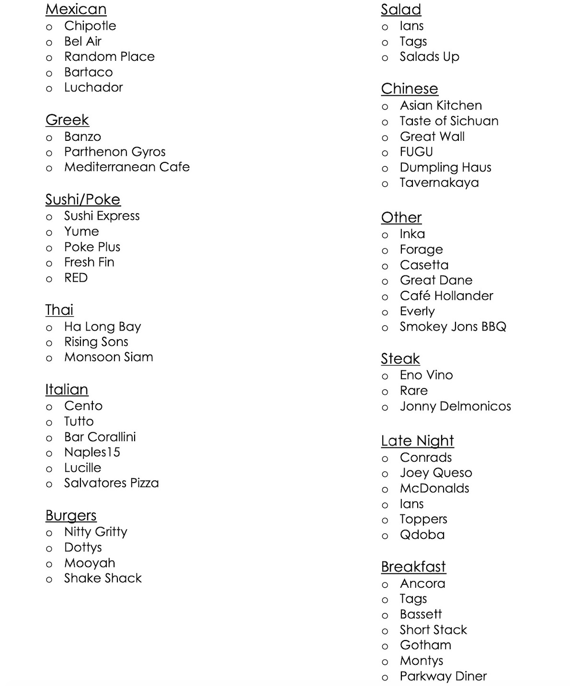

I currently attend UW-Madison and love the college town of Madison. One of my favorite things to do is exploring new resturants and finding fun things to do around the area. On this page you can find a list of somme of the best resturants in Madison that I have come up with in a list that is seperated into categories by cousine. I also suggest looking through Yelp to read reviews on the resturants or to check out their menus. Click here for Madison's Yelp page.
